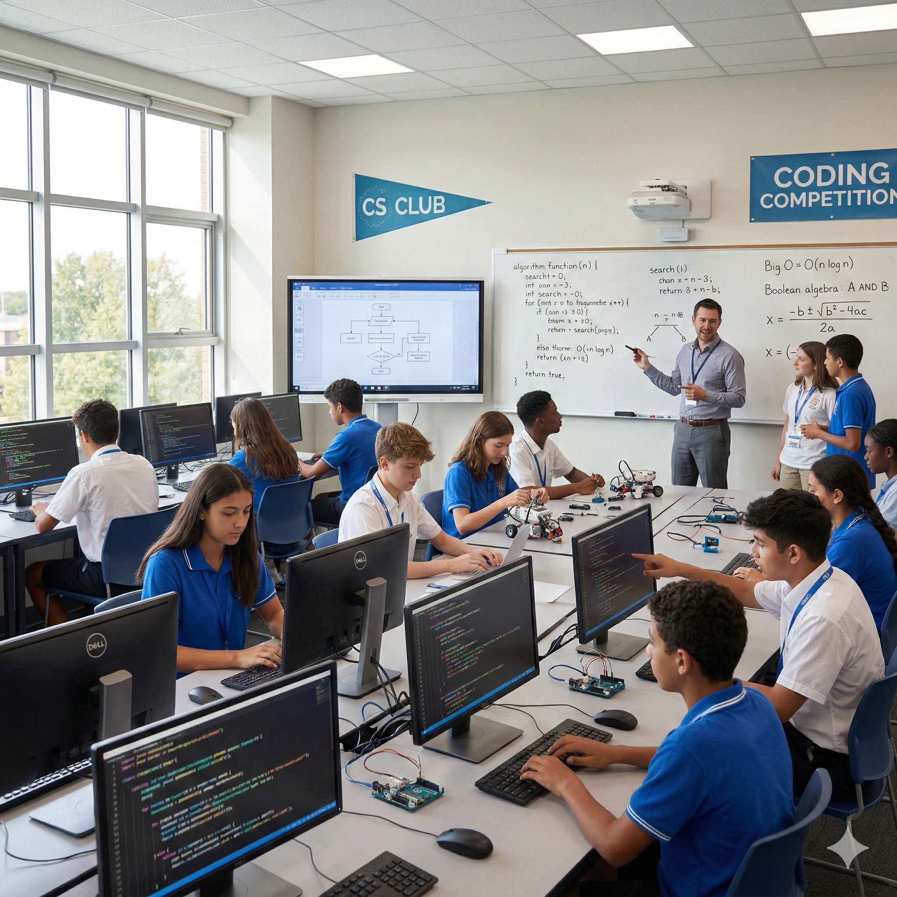
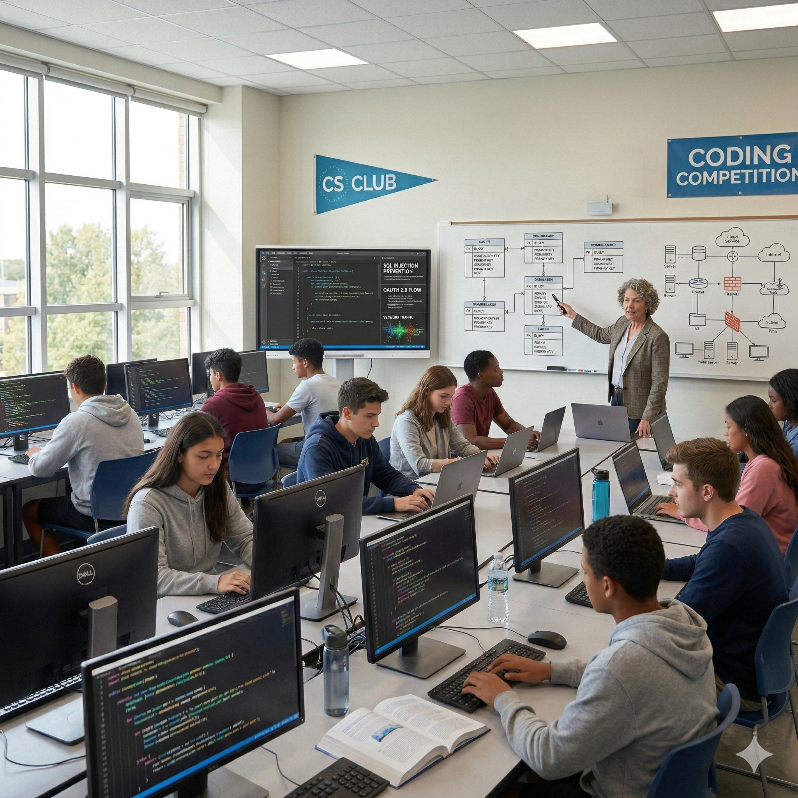
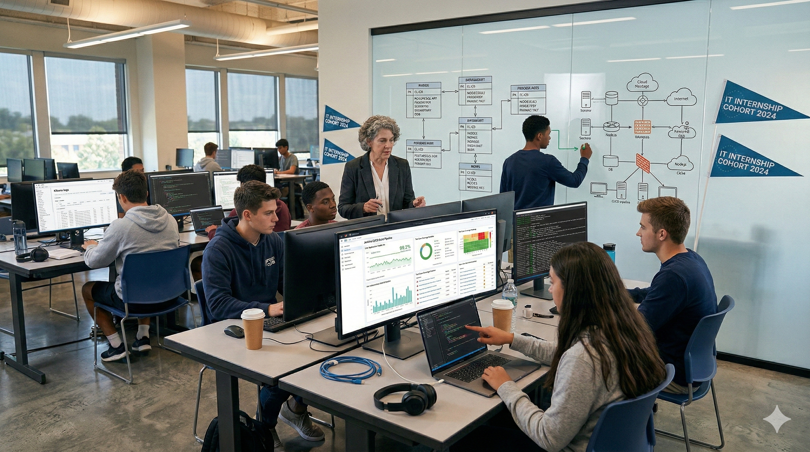
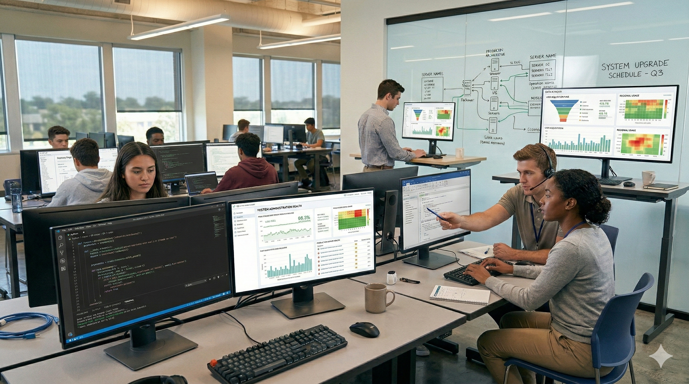

Information Technology focuses on building, managing, and securing digital systems. IT professionals develop software, manage networks, analyze data, and protect organizations from cyber threats in an increasingly digital world.

Focus on Mathematics, Computer Science, and logical reasoning. Participate in coding competitions, tech clubs, and basic programming to build a strong digital foundation.

Pursue B.Tech, B.Sc, or BCA in Information Technology or Computer Science. Learn programming, databases, networking, cybersecurity, and software development.

Gain hands-on experience through internships in software companies or IT departments. Work on real-world projects, debugging, testing, and team collaboration.

Start as a software developer, system administrator, IT support specialist, or data analyst. Build technical expertise and understand industry tools and workflows.
Earn certifications in Cloud Computing, Cybersecurity, Data Science, DevOps, or Artificial Intelligence to enhance career growth and specialization.
Advance to senior roles such as IT Manager, Solution Architect, Cybersecurity Expert, or Tech Entrepreneur. Lead digital transformation and innovation initiatives.